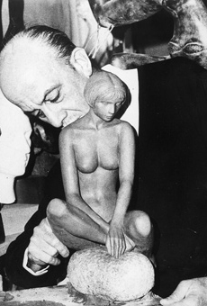

Vitaliano De Angelis L'OPERA

Galleria

Sculture
De Angelis, pur sperimentando procedimenti diversi, e materie diverse, si attiene al modulo figurativo, con la certezza che gli viene da una convinzione profonda, vissuta e confermata da un’esperienza di anni.
Il senso della tradizione è attivo e operante in lui fin dalle origini, come uno stimolo perenne alla sua fantasia, che non ricalca le immagini del passato, che anzi le ricrea in una formulazione nuova, senza preoccuparsi minimamente della loro attualità.
De Angelis è uno scultore fedele a se stesso, cui l’amore della solitudine non nega tuttavia il contatto con un presente difficile e la comprensione di uno sperimentalismo a tutti i livelli.
Giuseppe Marchiori: Vitaliano De Angelis, in Scultura toscana del Novecento, a cura di U. Baldini, Nardini Editore, Firenze, 1980, p. 86.